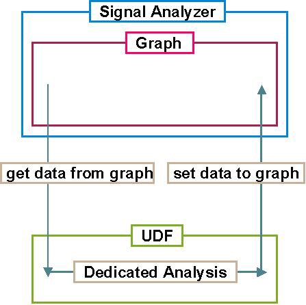
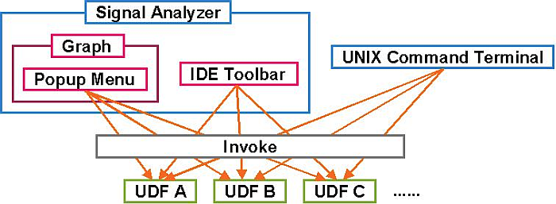

User Defined Function
The User Defined Function (UDF) enables you to create a dedicated waveform-analysis function, apply it to the displayed waveforms of the Signal Analyzer directly from the GUI, and make it portable among all users or all devices. These functions are independent of the test method program.
The following illustration shows a typical procedure to perform a dedicated waveform analysis using the UDF:

The process is as follows:
- Get data from the target graph.
- Process the data.
- Apply the processed data to the graph.
The UDF can be written in C++ and be built as an executable file. Thus, you can easily call the UDF from a Unix command terminal. You can also assign the UDF to the toolbar or shortcut menu (within the graph of the Waveform Graphs Tool) to easily access it from the GUI. Refer to the following illustration:

The following APIs can be used in the UDF:
- Data Display API
- Part of the Test Method API
ARRAY_I
ARRAY_D
ARRAY_COMPLEX
All "DSP_XXX" functions